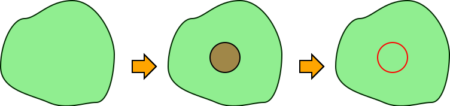
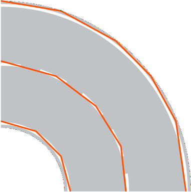
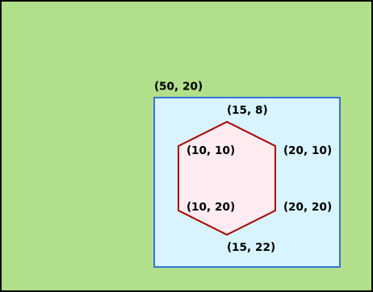

Virtuális világ
Az autónak egy virtuális tesztpályán kell végigmennie, amelyhez modellezni a világot. Két teszt pályát biztosítunk, egy egyszerűbbet és egy nagyobbat, bonyolultabbat. Alább látható az egyszerűbb.

A fenti világ elemekből épül föl, amelyek között vannak egyenes útszakaszok, kanyarok (pl. 45° és 90°), T elágazás, gyalogos átkelő, közúti táblák, parkolók és fák. Mindezt egy XML, vagy egy JSON írja le. A feladat megoldásához bármelyik formátum használható.
A számítógépes grafikában megszokott módon, a bal felső sarok jelenti az origót (0,0) koordinátát. Az x tengely tehát jobbra haladva, az y tengely lefelé haladva növekszik. Így kell értelmezni az XML-t és ekképpen működik a megjelenítés is, hiszen a form bal felső sarkánál van a (0, 0) pont. Az alábbi kép forrása.

Objektumok leírása
Egy-egy objektum leírása a következőképpen néz ki (XML-ben):
<Object type="road_2lane_straight">
<Position x="1700" y="144"/>
<Transform m11="0" m12="1" m21="-1" m22="0"/>
<Parameter name="roadpainting_1" value="1"/>
<Parameter name="roadpainting_2" value="1"/>
<Parameter name="roadpainting_3" value="1"/>
</Object>
- A
typeattribútum írja le, hogy milyen objektumról van szó. A példában egy 2 sávos egyenes útszakaszról. - A
Positionelem megadja az elem viszonyítási pontjának koordinátáját. - A
Transformelem egy 2×2-es transzformációs mátrix, amely forgatást ír le. - A
roadpaintingmegadná, hogy milyen felfestések vannak vannak az úton, de ez nem releváns - Egy ilyen egyenes útelem 350×350px, ekkora a kép is és ennek kell lennie az XML-ben is.
Az út elemek viszonyítási pontjai
A képfájlok amikkel a rajzoló csapat dolgozik elég sajátosan működnek. A transzformációs mátrixban leírt elforgatás pl. nem a bal felső sarokkal van értelmezve, hanem elemenként más és más ponttal. Ezek rögzítése szükséges lehet a modellben, a rajzoló csapat munkáját megkönnyítendő. Egyébként korábbi félévekben ezt már összeszedték egzakt módon is.


Minden itt fel nem sorolt esetben feltételezhető, hogy a bal felső sarok a viszonyítási pont.
Egy korábbi félév során a referenciapontokat (részben) már összegyűjtötték (@csabalint, @SiposGergo, @markkurucz), ez elérhető XML vagy JSON formátumban.
A mozgatásra szoruló elemek (vezérelt autó és NPC autók) nem képezik részét a világ leírásának, viszonyítási pontjuk nem definiált. A rendelkezésre bocsátott autó képek méretarányosak az összes többi objektummal.
A világhoz szükséges elemek megtalálhatóak a kiinduló project src/main/resources (Java) vagy src/AutomatedCat/Assets (C#) mappájában.
Objektum poligonok
Minden objektumnak kell, hogy legyen egy poligon váza, amely többek között az ütközéshez vagy a kijelüléshez is használható. Különböző objektumoknak azonban kicsit mást jelent ez a poligon „váz”.
Az autó esetében (pl.) a legfontosabb felhasználása az, hogy nekiment-e valaminek, tehát az autó körvonalát kell megjelölni. Ez leegyszerűsíthető, nem kell a grafikai elemet teljes mértékben követni.

Egyes elemek (fa, tábla) a felülnézet miatt nem azt mutatják, ami az ütközéshez szükséges. Értelem szerűen nem a lombkoronának, hanem a törzsnek lehet nekiütközni. Tehát egy törzset kell ábrázolni a poligonnal.

Az útelemek esetében nem az ütközés a probléma, hanem a sávokat kell kijelölni, amit a a sávtartó automatika fog felhasználni. Ezeket is lehet egyszerűsíteni.

A poligonok megrajzolásához használható a VGG Image Annotator, amely böngészőből is működik és a megrajzolt polygont JSON-ben le lehet menteni.
Korábbi félév során @ArchiCat és @konyarilaszlo ezt már megtette, elérhető a worldobject_polygons.json állományban.
Ennek struktúrája:
{
"objects": [
{
"typename": "car_1_white",
"polys": [
{
"type": "standalone",
"points": [
[51, 239],
[40, 238],
[26, 236],
...
[51, 239]
]
}
]
},
...
]
}
Van benne egy objects tömb, minden objektum esetében a typename a képfájl neve (kiterjesztés nélkül), majd egy polygon tömb (mivel a VGG Image Annotator multipoligonokat is elő tud állítani). Azon belül egy points tömb ahol a koordináták a képfájlon koordinátarendszerében értendők.

A fenti példa esetében a képfájl (50, 20) koordinátára van rajzolva, a hatszög benne a képen belüli relatív koordinátákkal van megadva.
"points": [
[10, 10],
[15, 8],
[20, 10],
[20, 20],
[15, 22],
[10, 20],
[10, 10]
]
Méretarány
Az XML-ben leírt objektumok koordináta-rendszere nem feltétlenül egyezik meg a megjelenítő koordináta-rendszerével, ezt figyelembe véve skálázás, vagy viewport kezelés válhat szükségessé.
A feladat megoldás során jellemzően valóságos mértékegységekben specifikáljuk a feladatot (pl. méter, km/h, m/s^2, stb.) míg az XML és a grafikai elemek értelem szerűen pixellel dolgoznak. Ennek feloldására, illetve az átváltásra az 1m=50px szabályt célszerű használni. Ez egy hozzávetőlegesen arányos érték, amellyel számolni is könnyű.